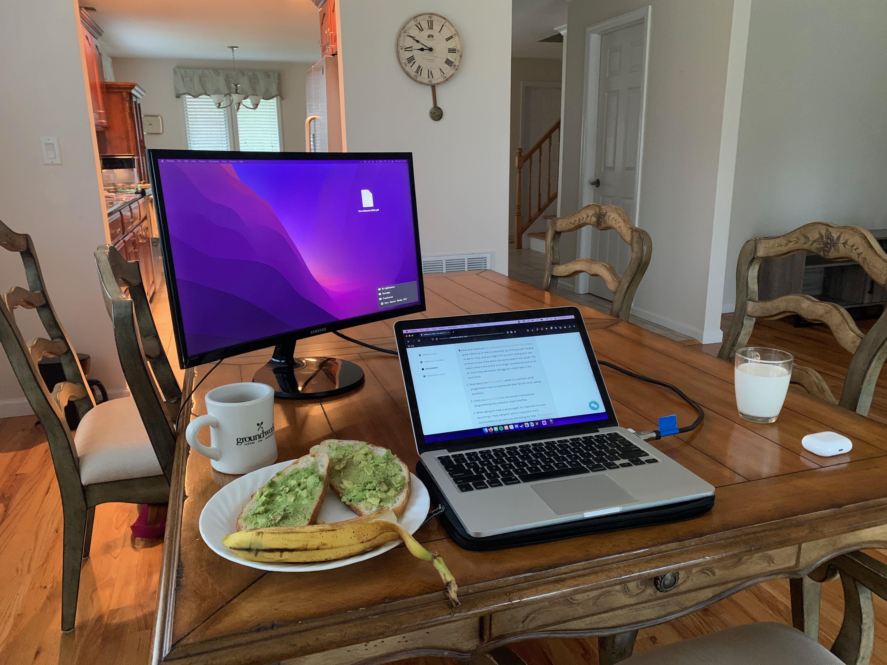

Toast

Description
This is a simple and hardy breakfast that packs a punch and a half. Pair it with a hot cup of pour over coffee and you'll be gitting and committing to your hearts content all day long!
Of course as you'll see, this dish is a lot more than just toast... (sorry about the slightly inaccurate picture, I'll take a new one when I get a chance).
Ingredients
- 2 slices sourdough
- 1 large egg
- 1 tomatillo
- 1 serano pepper
- 1/2 avocado
- 2 lime wedges
- 2 tsp salt
- 1 tbsp butter
- 2 tsp freshly ground black pepper
Steps
- Wash & chop veggies
- Mash avocado and mix with salt, pepper, & juice from 1 wedge
- Saute peppers & tomatillo to create a salsa
- Stir salt, pepper, and lemon juice into salsa
- Toast sourdough in a toaster
- Crack egg over salsa, protect the yolk and fry over medium
- Serve one slice of toast with avocado and one with salsa egg!